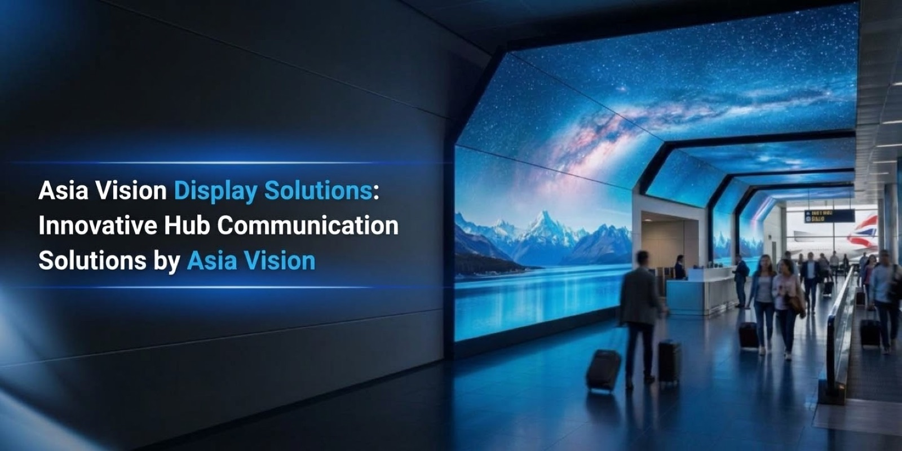
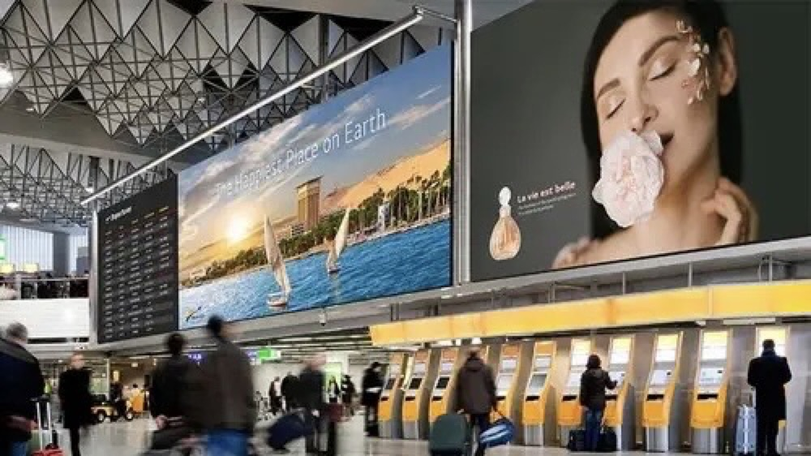

By Cassie
An airport terminal is one of the hardest environments a display can be asked to survive. Concourses run at full brightness under skylights and glazing, they operate every hour of the year, and a screen that goes dark is a passenger flow problem before it is a maintenance ticket. The same is true of rail stations, ferry terminals and bus interchanges, where signage carries both commercial advertising and operational information that travellers depend on.
That dual role shapes every specification decision. A flight information board must be readable at a glance from across a hall, while an advertising panel in the same terminal competes with daylight and needs colour that holds up on camera. This guide covers what drives demand in airport and transport projects, the display specifications that terminals actually require, the product families Asia Vision Technology recommends, and the questions transport authorities and integrators ask during procurement.
Passenger volumes recovered and then grew past their previous peak, and terminals that were designed around printed boards and static signage now handle a much wider information load through screens. A modern airport displays flight status, gate changes, baggage belt numbers, security wait times, retail offers and wayfinding across a single coordinated network. The volume of information that has to reach a traveller between the kerb and the gate is simply not deliverable on printed signage, and each gate change that a screen handles instantly is a queue that never forms at a service desk.
Operational resilience drives the second requirement. Transport terminals run continuously, so equipment is specified for a duty cycle closer to a data centre than to a retail store. Screens need to survive dust from baggage handling, cleaning chemicals, temperature swings between a glazed concourse and a conditioned interior, and the vibration that comes with a structure built over a live transport network. Maintenance has to be possible from the front, because in most terminals there is no accessible void behind a wall-mounted screen and no acceptable window in which to close a corridor.
Commercial pressure supplies a third driver. Airports and stations have become media estates in their own right, and advertising revenue is a material line in the operating budget of many terminal operators. That means the digital signage network is expected to pay for itself: advertising panels are placed where dwell time is highest, and the brightness, contrast and refresh of those panels directly determine what a media buyer is willing to pay for the slot. A screen that photographs badly is a screen that sells at a discount.
Regulatory and accessibility obligations complete the picture. Transport authorities increasingly require that information displays meet contrast and legibility standards, that emergency messaging can pre-empt commercial content, and that the network can be audited. Those requirements push specification toward stable colour output, a control layer that can prioritise operational messages over advertising, and calibration that keeps a wall of screens visually uniform even after individual panels are replaced.
Specification in a transport terminal is driven by three variables: viewing distance, ambient light and duty cycle. A flight information wall read from across a departure hall can use a coarser pitch because the observer is far away, while a gate-side or retail screen viewed at two metres needs a fine pitch to keep text crisp. Brightness has to be set against the zone, with glazed concourses and any position facing daylight requiring considerably more output than an interior corridor. Because terminals operate continuously, thermal design and service access matter as much as the optical specification.
Two further requirements separate transport work from ordinary commercial projects. First, the panel must remain uniform across a large array, since a video wall built from many cabinets reveals any colour or brightness drift between units immediately. Second, the control system must support priority messaging, so an operational alert can take over every screen ahead of a scheduled advertisement. The table below summarises the specification envelope that suits typical terminal positions.
| Terminal Position | Series | Pixel Pitch | Brightness | Duty Spec |
|---|---|---|---|---|
| Departure hall FIDS wall | CV-PRO Indoor | P1.9 / P2.6 | 1000-1500 nits | 24/7 continuous, front service |
| Glazed concourse advertising | CV-PRO Indoor | P1.5 / P1.9 | 2000-2500 nits | High ambient, 3840 Hz refresh |
| Baggage claim belt display | CV-PRO Indoor | P2.6 / P3.9 | 800-1200 nits | Dust tolerant, easy wipe-down face |
| Exterior kerbside signage | D-PRO Outdoor | P4.8 / P6.67 | IP65, 8000+ nits | Full sun, rain and road dust exposure |
| Platform and gate wayfinding | CV-PRO Indoor | P2.6 / P3.9 | 800-1500 nits | Long life, low maintenance access |
For terminal interiors the recommendation is the CV-PRO family, chosen for the combination of fine pitch and high refresh that transport information work demands. Refresh at 3840 Hz or above is important in a concourse not only for broadcast trucks filming a terminal but for the ordinary traveller photographing a departure board with a phone, which is now the default way people share a delay. The COB option raises contrast to 10000:1, which materially improves legibility of dense text against a bright background and keeps a wall of panels visually consistent.
Exterior positions are a different engineering problem and call for the D-PRO outdoor series. Kerbside signage, drop-off canopy fascias and any structure facing the sky need a sealed cabinet rated to IP65 and a brightness ceiling in the region of 8000 nits and above so the image survives direct sun. For baggage handling areas, where dust and cleaning chemicals are both present, a sealed face and a front-service design keep maintenance inside a normal cleaning routine rather than a specialist visit. The table below sets out the product mapping in more detail.
| Product | Key Features |
|---|---|
| Asia Vision CV-PRO Indoor | Fine-pitch indoor series from P1.2 to P2.6, refresh 3840 Hz and above, brightness selectable 800 to 2500 nits, COB option at 10000:1 contrast for dense information display. |
| Asia Vision D-PRO Outdoor | Sealed outdoor series rated IP65 with 8000 nits and above, pitched for kerbside and canopy signage where sun, rain and road dust are continuous. |
| Asia Vision X Series Rental | 500 x 500 mm cabinet at 6.5 kg with front and rear service, used for temporary terminal media, event overlays and overflow advertising during peak travel. |
| Asia Vision Control Options | Control and content layer with message priority so operational alerts override scheduled advertising, plus remote monitoring across a distributed terminal estate. |
Transport projects are procured against a service commitment, so the supplier is judged on repeatability as much as on the panel. Asia Vision Technology builds to fixed cabinet formats, so an information wall specified for one terminal can be extended years later with cabinets that match the original geometry and colour behaviour. That consistency is what allows a large video wall to stay visually uniform, and it is the reason terminal operators standardise on a single supplier rather than mixing models from a lowest-cost tender.
The range covers both the interior and exterior halves of a terminal estate. Pixel pitch spans P0.9 to P20, indoor brightness is selectable from 800 to 2500 nits, outdoor cabinets run from 5000 to 10000 nits, and refresh is rated at 3840 Hz or above indoors and 1920 Hz or above outdoors. Every panel carries a rated 100,000 hour service life and a three-year warranty, which is the level of assurance a twenty-four hour operation needs before it commits a departure hall to one hardware family.
Compliance and delivery follow conventional lines because transport procurement rewards predictability. Products hold CE, FCC and RoHS certification, with UL and ETL available for North American projects and UKCA documentation for the United Kingdom, and production is quoted at 15 to 20 working days so a phased terminal rollout or an urgent replacement can be scheduled against a real calendar. Documentation packs cover structural loads, power distribution and signal routing, which lets a systems integrator design the electrical and control work without a second survey.

For this requirement our range covers it directly: the COB EF outdoor series (IP65, 3000 nits) and the D-PRO outdoor series (front maintenance).
Ready to upgrade your venue with LED displays?
Contact Asia Vision Technology for specifications, pricing, and free consultation.
📩 Get a Quote WhatsApp